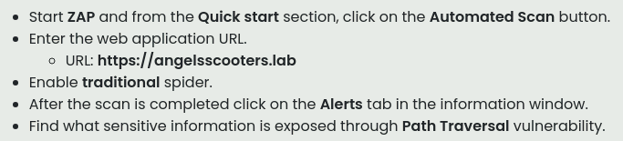
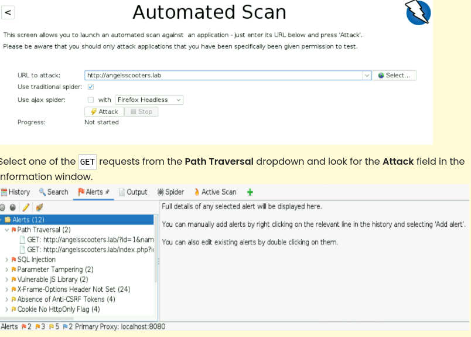
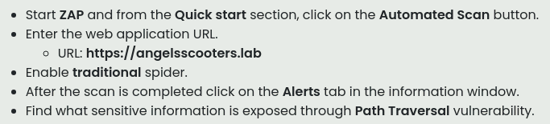
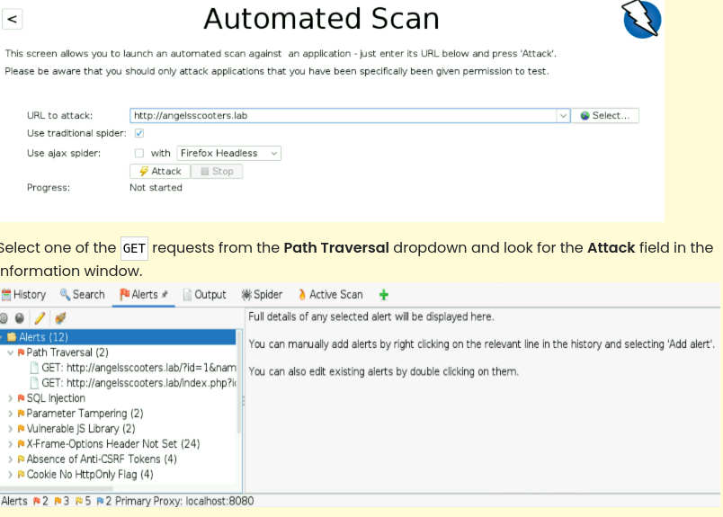

II. Active Information Gathering – Advanced
▶
1) Port Scanning
Exemple de scan avancé avec Nmap :
L’option -A active :
• la détection d’OS
• la détection de versions
• le traceroute
• les scripts NSE de base
C’est l’une des commandes les plus utiles pour une reconnaissance rapide et complète. PS: -A pour aggressif
nmap -A scanme.nmap.orgL’option -A active :
• la détection d’OS
• la détection de versions
• le traceroute
• les scripts NSE de base
C’est l’une des commandes les plus utiles pour une reconnaissance rapide et complète. PS: -A pour aggressif
▶
2) Misconfigured Services
OWASP Top 10 (Résumé)
L’OWASP (Open Web Application Security Project) est une organisation de référence en cybersécurité, connue pour publier le « Top 10 », un classement des risques de sécurité les plus importants dans les applications web. Il sert de base aux audits, aux tests d’intrusion et aux bonnes pratiques de configuration.
Shodan (Résumé)
Shodan est un moteur de recherche spécialisé permettant de trouver des services et équipements exposés sur Internet. Il identifie les ports ouverts, les services actifs et les appareils mal configurés.
Exemple Nmap (utile pour les services mal configurés)
L’OWASP (Open Web Application Security Project) est une organisation de référence en cybersécurité, connue pour publier le « Top 10 », un classement des risques de sécurité les plus importants dans les applications web. Il sert de base aux audits, aux tests d’intrusion et aux bonnes pratiques de configuration.
Shodan (Résumé)
Shodan est un moteur de recherche spécialisé permettant de trouver des services et équipements exposés sur Internet. Il identifie les ports ouverts, les services actifs et les appareils mal configurés.
Exemple Nmap (utile pour les services mal configurés)
PORT STATE SERVICE VERSION
21/tcp open ftp vsftpd 3.0.3
| ftp-anon: Anonymous FTP login allowed (FTP code 230)
▶
3) Directory Enumeration
Après avoir cartographié l'infrastructure et obtenu l'accès au serveur FTP non sécurisé,
vous décidez d'analyser les informations fournies par l'application web.
C'est généralement une mine d'or pour la reconnaissance : on y trouve souvent des
adresses e-mail, des noms d’employés, des éléments internes, et des informations
organisationnelles utiles.
Ces données sont très utiles pour la collecte **passive**, car la collecte active nécessite souvent une autorisation. Vous décidez donc de commencer par l’énumération des répertoires afin de découvrir les zones cachées ou protégées du site web.
Trouver les répertoires et fichiers manuellement est complexe, mais heureusement cette étape peut être automatisée grâce à des outils comme DirBuster, qui testent rapidement des milliers de chemins potentiels pour révéler des ressources non indexées.
Exemple d'utilisation d’OWASP DirBuster :
Lancez DirBuster pour démarrer le processus d’énumération.
URL cible : https://url.url
Fichier contenant la liste des répertoires et fichiers :
remplacer par le chemin du dictionnaire de mots
Laissez les autres paramètres par défaut.
Après l’énumération, consultez le nom du fichier ou répertoire caché dans la vue « Arborescence » (onglet Résultats).
Ces données sont très utiles pour la collecte **passive**, car la collecte active nécessite souvent une autorisation. Vous décidez donc de commencer par l’énumération des répertoires afin de découvrir les zones cachées ou protégées du site web.
Trouver les répertoires et fichiers manuellement est complexe, mais heureusement cette étape peut être automatisée grâce à des outils comme DirBuster, qui testent rapidement des milliers de chemins potentiels pour révéler des ressources non indexées.
Exemple d'utilisation d’OWASP DirBuster :
Lancez DirBuster pour démarrer le processus d’énumération.
URL cible : https://url.url
Fichier contenant la liste des répertoires et fichiers :
remplacer par le chemin du dictionnaire de mots
Laissez les autres paramètres par défaut.
Après l’énumération, consultez le nom du fichier ou répertoire caché dans la vue « Arborescence » (onglet Résultats).
▶
4) Vulnerability Assessment
Analyse de vulnérabilités avec OWASP ZAP
Un autre excellent outil fourni par la fondation OWASP est Zed Attack Proxy (ZAP). Il permet d'effectuer une analyse de vulnérabilité automatisée sur une application web.
ZAP explore l’application web, suit les liens qu’il trouve, puis envoie ces éléments au scanner actif, qui réalise des tests d’intrusion automatisés (injections, traversée de répertoires, failles d’authentification, configuration, etc.).
Une fois l’analyse terminée, vous pouvez :
– générer un rapport PDF ou HTML
– consulter le détail des vulnérabilités dans l’onglet Alerts
Remarque : Lors du premier lancement de ZAP, l’application demande si la session doit être enregistrée.
Sélectionnez : « Non, je ne souhaite pas conserver cette session pour le moment ».
Étapes :
• Démarrer ZAP et dans la section Quick Start, cliquer sur Automated Scan.
• Saisir l’URL cible (ex. :
• Activer le traditional spider.
• Lancer l’analyse avec Attack.
Illustrations :
 
Un autre excellent outil fourni par la fondation OWASP est Zed Attack Proxy (ZAP). Il permet d'effectuer une analyse de vulnérabilité automatisée sur une application web.
ZAP explore l’application web, suit les liens qu’il trouve, puis envoie ces éléments au scanner actif, qui réalise des tests d’intrusion automatisés (injections, traversée de répertoires, failles d’authentification, configuration, etc.).
Une fois l’analyse terminée, vous pouvez :
– générer un rapport PDF ou HTML
– consulter le détail des vulnérabilités dans l’onglet Alerts
Remarque : Lors du premier lancement de ZAP, l’application demande si la session doit être enregistrée.
Sélectionnez : « Non, je ne souhaite pas conserver cette session pour le moment ».
Étapes :
• Démarrer ZAP et dans la section Quick Start, cliquer sur Automated Scan.
• Saisir l’URL cible (ex. :
https://angelsscooters.lab).• Activer le traditional spider.
• Lancer l’analyse avec Attack.
Illustrations :
 